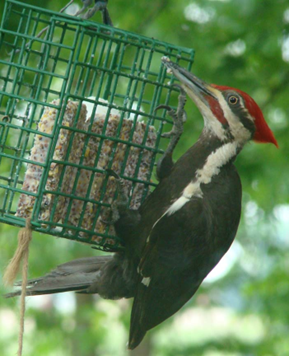

During early March of 2010 I was absolutely awe-struck when a male pileated woodpecker swooped in to awkwardly hang from a large suet “cage” and feed on it with his huge bill. This enormous bird is almost prehistoric in appearance. His feet are as large, I believe, as a hawk’s. He truly does not photograph well at a distance, as his whole body, except his head, neck and beneath his wings, is black. Without the colorful head, he would appear to be imitating an old-time undertaker. But the head! A large crest (everything about this bird is LARGE!) is his crowning glory – no pun intended. Bright scarlet, tufting in the wind, it takes no imagination to see in him the cartoon character, Woody Woodpecker. However, the cartoonist Walter Lantz based Woody instead on the acorn woodpecker, a western species. The pileated’s “bugle call” that echoes throughout the neighborhood when the bird is “greeting the dawn” fits the role of Woody perfectly. Equally as loud is the call between mates – sometimes a duet – “whucker whucker whucker.”
Yes, I was and still am besotted with the pileated! I grabbed my camera, whispering, “Don’t go! Don’t go! Don’t go!” Whenever I see an uncommon bird up close and personal, I behave as if I’ll never see it again. This turned out to be not necessary with “Harry,” as I dubbed him. He returned to the suet for days. The last photos I have of him were taken in April.
If I had my back to the open patio door working on my computer, I would hear a loud “cluck” (bird books call it “kuk”) and know it was back. I stabilized the feeder with twine tied to the clematis trellis. When I emailed a photo to my daughter Kathy in Denver, she said I would have to rig up a better way for him to access the suet, as he looked so “anxious.”
My sister-in-law Dorothy had a pileated experience. Years ago one came to the tray feeder that she had placed outside her third-floor apartment in Portland Oregon. Her apartment complex was adjacent to a wooded area. The pileated would sweep in, cling to the edge of the tray, then “shoulder” its way onto its surface to access the birdseed. It sometimes pecked on her window (image fighting?) until she thought surely the glass would break.
The eyes – did I mention his eyes? They are anxious-looking – almost frantic. But that is deceiving. He is “wary.” Years ago in Indiana pileateds were called “woods chickens” and were hunted for food. It stabbed me right in the heart to learn that! In the 1800s Audubon sampled pileated “meat,” from a city market and was quoted as saying he considered them tough and “extremely unpalatable.” Perhaps the pileated’s inborn instincts guide it to be cautious when outside its preferred deep woods habitat.
Audubon observed: “It is at all times a shy bird… When seen in a large field newly brought into tillage, and yet covered with girdled trees, it removes from one to another, cackling out its laughter-like notes, as if it found delight in leading you a wild-goose chase.”
By the 1900s the pileateds were rare. But they are recovering! Their numbers are increasing dramatically.
I finally had to take down the suet because a dozen or more starlings descended upon my back yard with their young. They would wipe out the four suet cakes that filled the large “cage” feeder in just a day or two. But before I removed the suet, I caught a flash of a second pileated in my maple tree while Harry was clinging to the cage. She had a smaller crest and less white on her head and neck. Harry had a mate! Although I did not see her again, I named her “Harriet,” and I envisioned them raising a family of little pileateds. I do think they left the neighborhood, as I have not seen them since. That summer the rural electric company took down many trees in the area.
The pileated is about 15 inches long from tip of crest to end of his tail. His white-splashed under-wings span 25 to 30 inches in flight, which is strong with just an occasional flap of the wings. The white wing feathers appear as a stripe along the length of the wing as he works at ants and grubs on a decaying tree. White extends from his beak down the length of its neck, a black strip stretches from the eye to this white stripe, and a thin streak of white appears just below the crest. Please reference photo for clarification!
In addition to their raucous calls, the sound of their “drumming” may be heard a mile away. In fall and winter it tells us he is drilling away to access insect larvae or carpenter ants; in spring he drums to attract a mate. “A favorite drumming limb may serve him for years.” (National Geographic – Song and Garden Birds.)
Pileateds make their nests in hollow trees, drilling a large oval entrance. They may use the same tree year after year but make a new entrance and nest each year. Their favorite tree will be riddled with the elliptical holes expertly drilled with their big, strong bills. Somewhere I have heard that a woodpecker’s skull is exceptionally thick to protect its brain from being injured by the drumming.
Three to five white eggs are laid, and in about 18 days the young hatch. Both parents share in incubation duties. The young leave the nest in about 25 days.
Pileateds may be credited – along with other woodpeckers – for saving trees infested by carpenter ants and other insects.
The pileateds can outmaneuver hawks but a peregrine falcon is a successful predator. The pileated’s straight-line flight makes it easy prey for the swift falcon.
If I never see another pileated, I will still feel blessed for my experience with Harry. If he comes back, I’ll feel doubly blessed! Pileateds rock!
